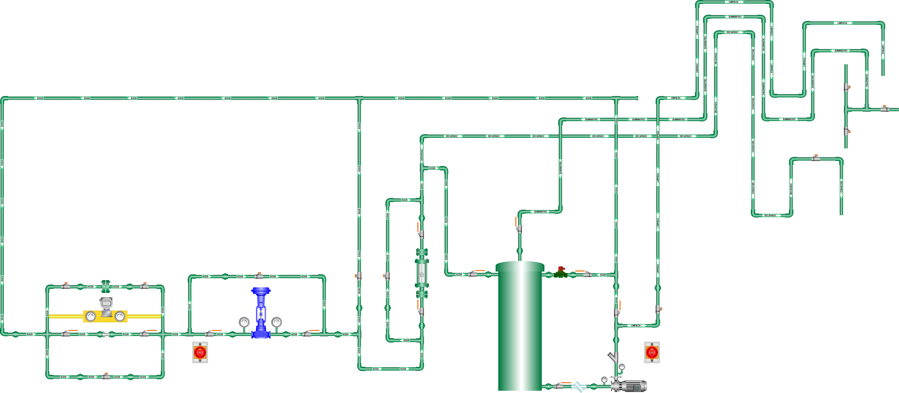

Practica Nº 1 IDENTIFICACION DE LOS ELEMENTOS PRESENTES EN EL MODULO.
Objetivo General
Conocer los componentes presentes en el del Modulo Didáctico de Control de Caudal de Lazo Cerrado.
Objetivos Específicos
- Identificar y contabilizar cada elemento presente en el Modulo Didáctico de Control de Caudal de Lazo Cerrado.
- Conocer la función que cumple cada elemento presente en el modulo.
Procedimiento
- Señalar en la imagen con una “X” las válvulas tipo bola presentes en el modulo. (Presione una “X” y arrástrela para moverla).

- ¿Cuántas llaves de paso manual se encuentran en el modulo?
- ¿Qué tipo de elemento es una llave de paso Manual?
- ¿Qué función cumple una llave de paso?
- Señalar en la imagen con una “X” la placa orificio presente en el modulo.
- ¿Qué tipo de instrumento es una placa orificio?
- ¿Qué función cumple una placa de orificio?